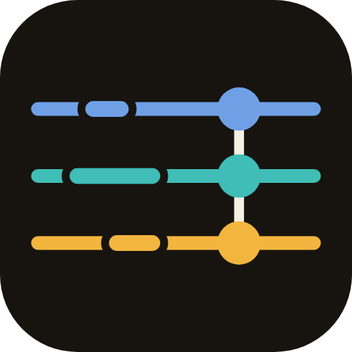
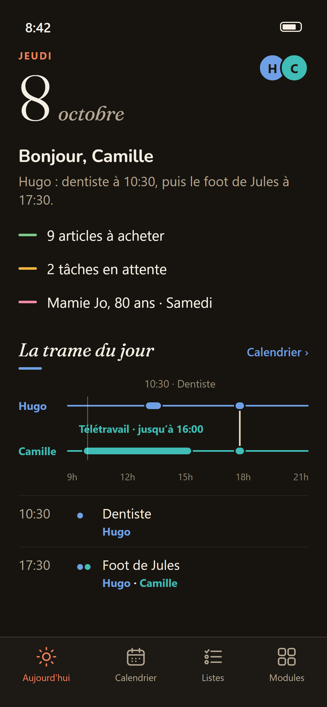
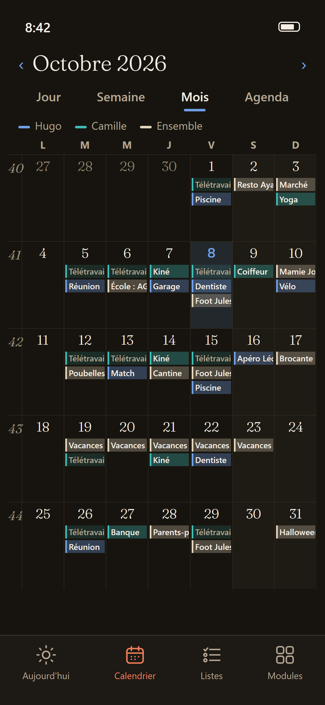
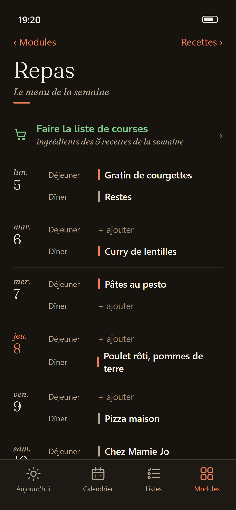
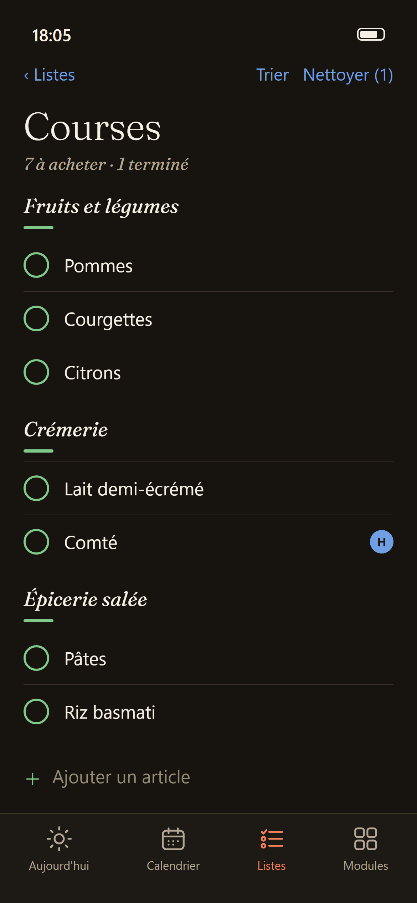
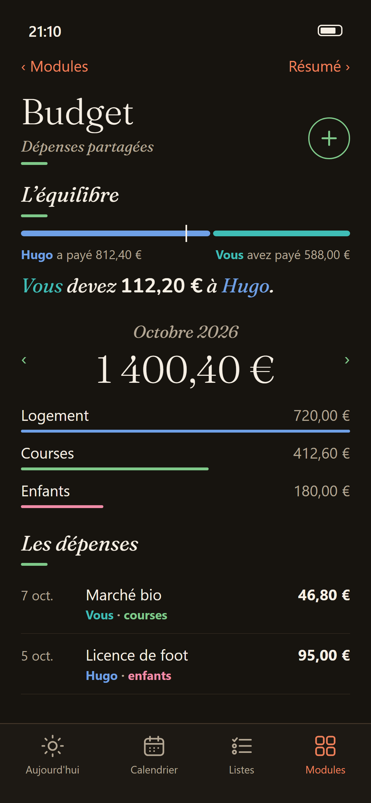

TrameLa semaine de votre famille,
planifiée à deux.
L'agenda, les courses, les repas, les anniversaires et le budget du foyer au même endroit. Ce que l'un ajoute, l'autre le voit aussitôt.
Une journée dans Trame
Le matin, la trame du jour
Un fil par personne, les rendez-vous posés dessus. On voit d'un coup d'œil qui est pris, et quand on se retrouve.

Le mois, en une couleur par personne
La couleur dit qui, pas où. Les horaires qui reviennent tous les jours s'effacent pour laisser ressortir l'exceptionnel.

Le menu de la semaine
On pose une recette sur un déjeuner ou un dîner. Fini le « on mange quoi ce soir ? » à 19 h : c'est écrit, et les deux le voient.

Les courses se remplissent toutes seules
Les ingrédients des recettes de la semaine arrivent dans la liste d'un geste, rangés par rayon. L'un coche au magasin, l'autre le voit à la maison.

Le budget, sans calculatrice
Chacun note ce qu'il paie. Trame dessine l'équilibre et dit qui doit combien à qui.

Foyer fictif, pour l'exemple.
Du menu aux courses, en un geste
Une recette au menu, et ses ingrédients vont dans la liste. Ce qui y est déjà n'est pas ajouté deux fois.
Ce que l'un ajoute, l'autre le voit
Essayez : ajoutez un article chez Camille, il arrive chez Hugo. Cochez-le d'un côté, il disparaît des deux.
- Pommes
- Lait
- Pommes
- Lait
Tout ce qui fait tourner un foyer
Agenda partagé
Jour, semaine, mois, agenda. Répétitions sur mesure, rappels, une couleur par personne.
Courses en temps réel
Rangées par rayon, listes types pour les achats du mois, plusieurs listes sur l'accueil.
Tâches
Qui fait quoi, avec une échéance, attribuées à un membre du foyer.
Repas et recettes
Le menu de la semaine, et les ingrédients envoyés d'un geste vers les courses.
Anniversaires
Reconnus automatiquement si votre ancien calendrier les contenait.
Budget partagé
Qui a payé quoi, qui doit combien à qui. Dans votre devise.
Emploi du temps
Semaines A et B, école, activités, copiables d'un jour à l'autre.
Notes et messages
La conversation du foyer, et « Du nouveau » pour voir ce que l'autre a changé.
Ce que Trame ne fera jamais
Venir d'une autre application
Trame importe votre calendrier depuis un fichier .ics ou un lien d'abonnement
(la plupart des agendas savent en produire un), vos listes par simple copier-coller, et reconnaît les
anniversaires déjà présents dans votre agenda. Un import est rejouable : le relancer
n'ajoute que ce qui manque, jamais de doublon.
Aide
Une question, un problème, une idée ? Écrivez à bonjour@trameapp.app. Une vraie personne répond.